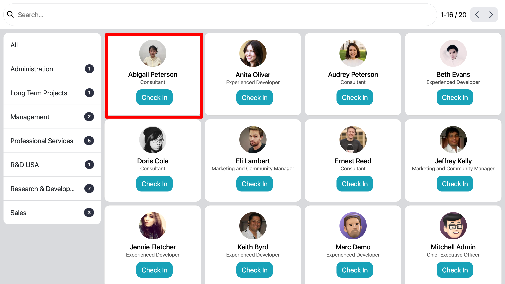
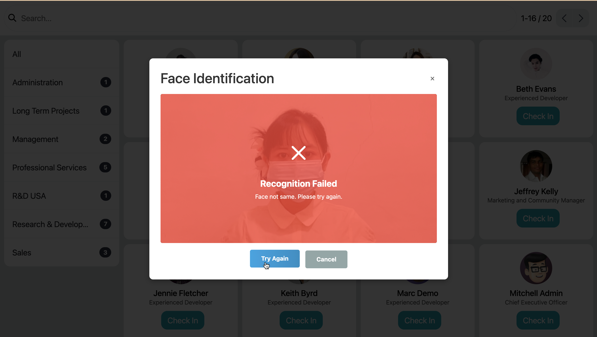
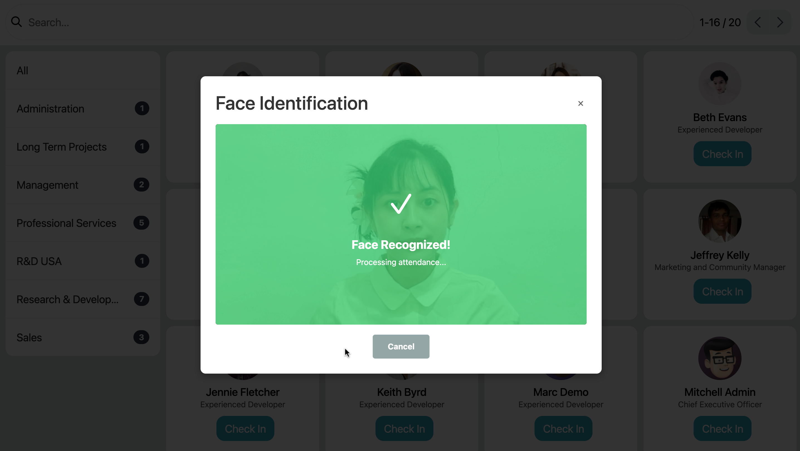
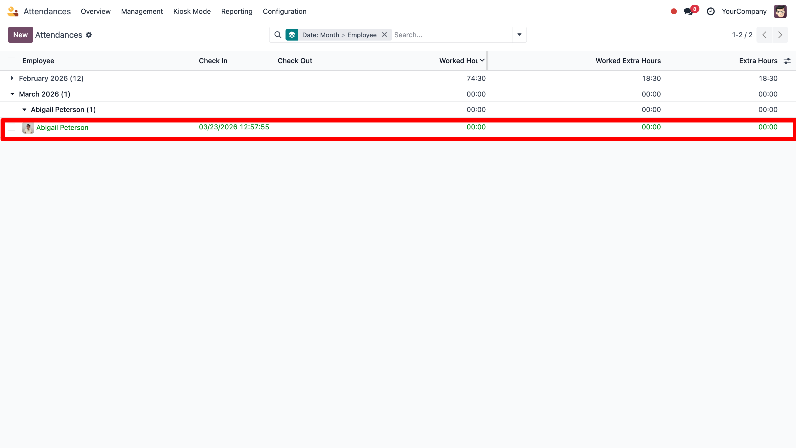

Overview
ARA Face Attendance is an attendance management module that leverages Artificial Intelligence (AI) technology to record employee check-in and check-out activities. This module is built on the ara_base_identify_face core engine, which is AI-based to ensure accurate and reliable facial identification.
Purpose
The purpose of this module is to replace or enhance traditional attendance methods (such as cards, PINs, or fingerprints) with a more secure and contactless solution based on AI-powered facial recognition.
Key Features
- Employee face-based check-in and check-out using AI identification
- Real-time facial identification and verification by an AI system
- Integration with a core AI-based facial recognition engine
- Timestamped attendance recording
- Reduced potential for fraud and proxy attendance thanks to AI verification
System Architecture
ARA Face Attendance functions as the implementation layer, while ara_base_identify_face provides the core Artificial Intelligence (AI)-driven logic for face detection, matching, and identification.
- Face capture (camera or image input)
- Facial identification by the core AI engine
- Employee data matching and validation
- Attendance record generation
Use Cases
- Daily employee attendance with AI authentication
- Office or factory access attendance logging based on AI facial recognition
- Remote or mobile attendance verification secured with AI technology
- High-security work hour tracking via AI-based identification
How To Use ?
- Open Attendances => Kiosk Mode
- You can choose employee , and open popup camera
- Example if failed
- Example if Success



